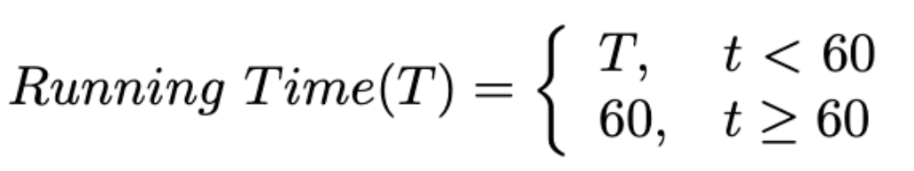

×
What's this?
Accounts have been assigned only to users involved in the annotation process. If you believe you need an account, please contact Nicholas Heller at helle246@umn.edu.
What's this?
Accounts have been assigned only to users involved in the annotation process. If you believe you need an account, please contact Nicholas Heller at helle246@umn.edu.
Variations in organ sizes and shapes can indicate a range of medical conditions, from benign anomalies to life-threatening diseases. Precise organ volume measurement is fundamental for effective patient care, but manual organ contouring is extremely time-consuming and exhibits considerable variability among expert radiologists. Artificial Intelligence (AI) holds the promise of improving volume measurement accuracy and reducing manual contouring efforts. We formulate our challenge as a semantic segmentation task, which automatically identifies and delineates the boundary of various anatomical structures essential for numerous downstream applications such as disease diagnosis and treatment planning. Our primary goal is to promote the development of advanced AI algorithms and to benchmark the state of the art in this field..
The BodyMaps challenge particularly focuses on assessing and improving the generalizability and efficiency of AI algorithms in medical segmentation across diverse clinical settings and patient demographics. In light of this, the innovation of our BodyMaps challenge includes the use of (1) large-scale, diverse datasets for training and evaluating AI algorithms, (2) novel evaluation metrics that emphasize the accuracy of hard-to-segment anatomical structures, and (3) penalties for algorithms with extended inference times. Specifically, this challenge involves two unique datasets. First, AbdomenAtlas, the largest annotated dataset [Qu et al., 2023, Li et al., 2023], contains a total of 10,142 three-dimensional computed tomography (CT) volumes. In each CT volume, 25 anatomical structures are annotated by voxel. AbdomenAtlas is a multi-domain dataset of pre, portal, arterial, and delayed phase CT volumes collected from 88 global hospitals in 9 countries, diversified in age, pathological conditions, body parts, and race background. The AbdomenAtlas dataset will be released by stages to the public for AI development, where in each stage we will release 1,000 annotated CT volumes. Second, JHH-1K [Park et al., 2020] is a proprietary collection of 1,150 dual-phase CT volumes from Johns Hopkins Hospital (JHH), where 22 anatomical structures are annotated by voxel. CT volumes and annotations of JHH-1K will not be disclosed to the public and are exclusively reserved for external validation of AI algorithms. The final scoring will not only be limited to the average segmentation performance but also prioritize the performance of hard-to-segment structures and consider the inference speed of the algorithm. We hope our BodyMaps challenge can set the stage for larger-scale clinical trials and offer exceptional opportunities to practitioners in the medical imaging community.
| Jan 10 | Challenge website running and registration open |
| Jan 16 | Release of the dataset and starter code |
| April 15 | Submission deadline |
| April 20 | Release of final results (decisions) |
| May 27 - May 30 | Challenge days (ISBI main conference) |
We will provide cash prizes for the top-5 teams (Amazon gift cards with 500/300/200/100/100 CAD, respectively). A certificate will be awarded to the top 10 teams. The top 10 performing methods (teams) will be announced publicly and invited to give oral presentations during the ISBI 2024 conference. All participating teams have the opportunity to publish their results on the ISBI 2024 and other vision conference proceedings.
The segmentation accuracy metric:
Weighted Dice Similarity Coefficient (wDSC). This metric evaluates the overlap between algorithm output and ground truth, with a weighting factor that reflects the segmentation difficulty for each structure. The weight for each structure’s DSC is estimated based on the per-class segmentation performance reported in existing literature (e.g., [Liu et al., ICCV 2023]). Some structures are inherently more difficult to segment than others due to blurry boundaries, small in size, and tubular structures. Our weighted metric is novel compared to the common practice in segmentation challenges, where only the average DSC is calculated uniformly across all classes.
Weighted Normalized Surface Distance (wNSD): The wNSD emphasizes the accuracy of the boundary delineation between the predicted segmentation and the ground truth. This is particularly important for precise organ volume measurement and subsequent surgical planning.
The segmentation efficiency metric:
Running Time: A maximum inference time of 60 seconds is allowed for each case. Note that we ignore the docker starting time for an accurate measurement. Cases exceeding this limit will be deemed failures, with their DSC and NSD scores set to zero.
Area Under GPU Memory-Time Curve (MB) [Ma et al. FLARE 2023]: The algorithm's memory efficiency is measured over time, considering the computational resources it uses, as reflected in the GPU memory-time curve. We offer a tolerance of 16GB for GPU memory consumption, which aligns with the affordability and availability of such GPUs in most medical centers.
The submitted docker containers will be evaluated on a Ubuntu 18.04 server. Detailed information is listed as follows:
CPU: Intel(R) Xeon(R) CPU E5-2683 v4 @ 2.10GHz x 16
GPU: NVIDIA TITAN RTX (24G)
RAM: 252G
Driver Version: 525.116.04
CUDA Version: 12.0
Docker version 20.10.21
The data download link to ImageNetCT-9K will be sent to approved teams via email. Please make sure that you can download large files (XXG CT Scans) from Google Drive or Baidu Netdisk and have enough space and computing resources to process them.
Additional data and pre-trained models are allowed!
The challenge data is acquired from patients represented in the ImageNetCT-9K [Qu et al., 2023, Li et al., 2023] and JHH-1K [Park et al., 2020] datasets, encompassing a broad spectrum of pathological conditions, age groups, and demographic backgrounds. This ensures that the challenge reflects a real-world, diverse patient population. Detailed statistics can be found in the corresponding publications.
For ImageNetCT-9K, we will provide 296K masks and 3.7M annotated images that are taken from 68 hospitals worldwide, spanning four distinct phases: pre, portal, arterial, and delayed.
For JHH-1K, a total of 1,150 dual-phase contrast-enhanced CT volumes from 575 subjects were acquired from 2005 to 2009. There were 229 men and 346 women (mean age: 45 ± 12 years; range: 18—79 years).
Q: How long can the participation request be approved after sending the signed challenge rule?
A: The request will be approved within 2-4 working days if the signed challenge rule document is filled out correctly.
Q: I'm only interested in the challenge dataset but I do not want to join the challenge. Can I download the dataset without joining the challenge?
A: Thanks for your interest. To ensure enough submissions, the dataset is only available to participants during the challenge.
Q: How many people can form a team?
A: Each team can have at most 10 people. The authors in your paper should be the same as the team member list.
Q: I have joined the challenge and downloaded the dataset. Can I quit the challenge?
A: No! Please respect the signed agreement. If registered participants do not make successful submissions, all the team members will be listed in the dishonest list.
Q: Can we use other datasets or pre-trained models to develop the segmentation algorithms?
A: Yes.
Q: Does the validation submission affect the final ranking?
A: No.
Q: During the testing phase, can I modify the methods and the paper?
A: Yes, you can make modifications before the testing submission. After making the testing submission, you cannot make modifications.